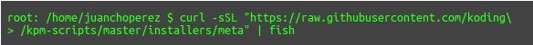

Es un entorno de desarrollo virtual, que permite desarrollar en lenguajes de programación como python, java, perl, Node.js, Ruby, C, C++, php etc. sin necesidad de descargar los kits de desarrollo. Un concepto que se debe tener claro para trabajar en koding es “Koding Package Manager” que en español es el administrador de paquetes de Koding, que es una herramienta que facilita la gestión de paquetes en Koding. Para instalar KPM se utiliza el siguiente comando:
curl -sSL "https://raw.githubusercontent.com/koding\ /kpm-scripts/master/installers/meta" | fish Para ver lo que puedo hacer con kpm utilizó el comando: kpm --help